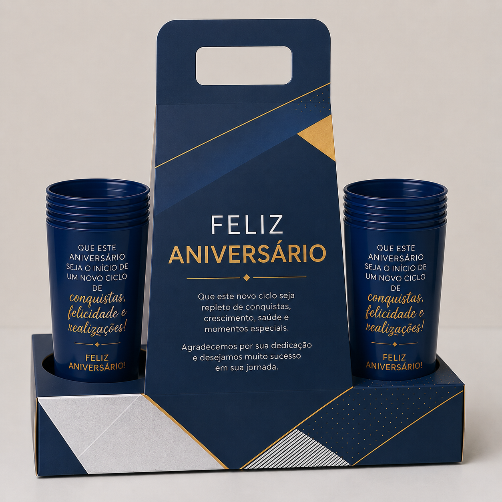

Transforme aniversários em momentos memoráveis.

Celebre datas especiais de forma elegante e significativa.
O Kit Aniversário foi criado para demonstrar reconhecimento, fortalecer vínculos e gerar uma experiência positiva para o colaborador.
Personalizável com brindes, chocolates, cartões, mensagens especiais e identidade visual da empresa.